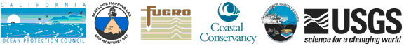

The California Seafloor Mapping Project (CSMP) is a collaborative, multi-institutional campaign creating the first comprehensive, high-resolution basemap of California's state waters (shoreline out to 3 nautical miles). Sponsored by the California Ocean Protection Council, State Coastal Conservancy, Department of Fish and Game, and several branches of the National Ocean and Atmospheric Administration (NOAA), this statewide project is being conducted as a public/private partnership involving industry, resource management agencies and academia. The tiered mapping campaign involves the use of state-of-the-art sonar, LIDAR (Light Detection and Ranging) and video mapping technologies; computer aided classification and visualization; expert geologic and habitat interpretations; and the creation of an online, publicly accessible data repository for the dissemination of CSMP products. Final products will include a folio series of multi-layer strip maps spanning California’s land/sea margin showing the seafloor and coastal geology rendered in unprecedented detail.
Acquisition of mapping data is being carried out with multibeam, sidescan and sub-bottom sonar, video tow sleds, and LiDAR to create highly detailed surface models and imagery of California's seafloor landscapes.
The raw data are being analyzed and interpreted to create substrate and habitat maps which are then ground-truthed with video imagery for habitat verification.
More...
Folio map sheets based on the geomorphic imagery and interpretive products at 1:24,000 scale, as well as a complete set of GIS-ready digital products, are being created from the CSMP data for the entire coast of California.
More...
